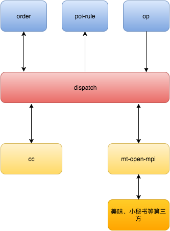
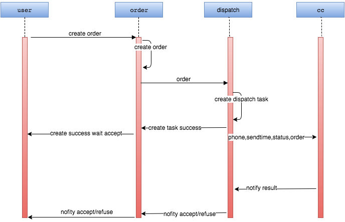
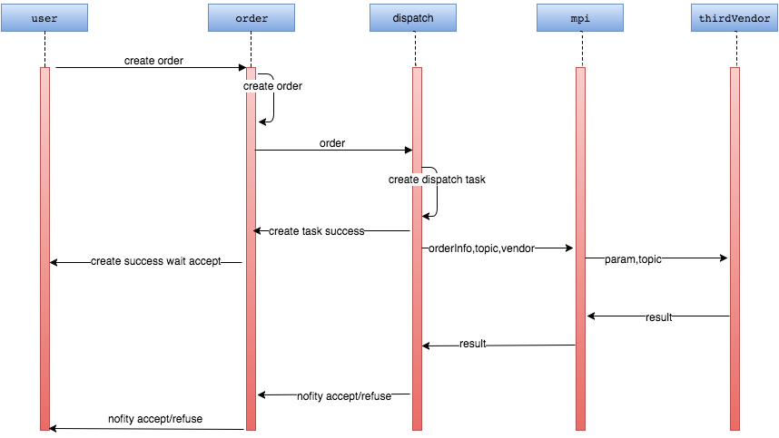
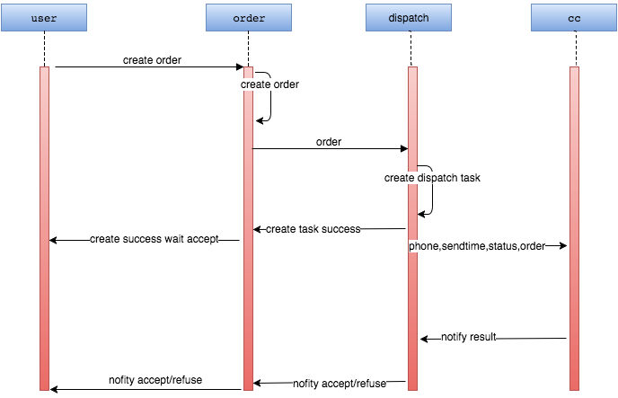
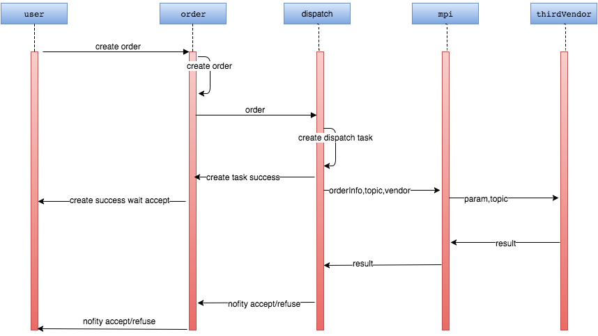

20170312订单调度系统设计
一、概述
1.背景
订单状态改变往往会触发其他服务或者带动其他服务状态信息进行改变，为了整合这些服务的触发和信息的变动，此次改版会建立调度系统，接受订单状态改变消息，触发相应的服务（主要包括声讯服务、第三方接单、推送服务等），保证订单状态的正常流转。
2.服务依赖
3.主要功能
1）将订单状态变化通过CC推送给商家
2）.将订单状态变化通过open-api推送给vendor
订单状态改变往往会触发其他服务或者带动其他服务状态信息进行改变，为了整合这些服务的触发和信息的变动，此次改版会建立调度系统，接受订单状态改变消息，触发相应的服务（主要包括声讯服务、第三方接单、推送服务等），保证订单状态的正常流转。
1）将订单状态变化通过CC推送给商家
2）.将订单状态变化通过open-api推送给vendor
